CONTOUR MAP
Objective:
- Draw cross-section along XY.
- A dam is proposed outside the eastern border of the map. A horizontal diversion tunnel is planned to divert the river water at an inver level(floor) at 200m. upto the Western Valley in the area.
Pre-requisites:
Topographic map
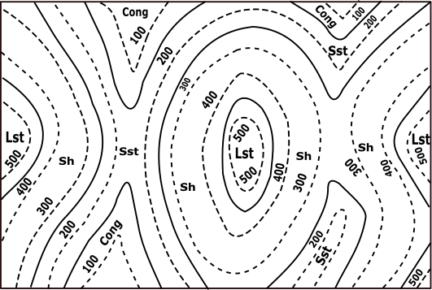 Description Contour map: It is a map illustrated with contour lines, for example a topographic map, which thus shows valleys and hills, and the steepness or gentleness of slopes.Topography: Topography is the study and description of the physical features of an area, for example its hills, valleys, or rivers, or the representation of these features on maps.
Mark all the points of XY line that is obtained by the intersection of the dotted line or the solid line with this XY of the contour map.
| Points | X-Co | Y-Co |
|---|---|---|
| a | x1 | 500 |
| b | x2 | 400 |
| c | x3 | 300 |
| d | x4 | 200 |
| e | x5 | 200 |
| f | x6 | 300 |
| g | x7 | 400 |
| h | x8 | 500 |
| i | x9 | 400 |
| j | x10 | 400 |
| k | x11 | 300 |
| l | x12 | 300 |
| m | x13 | 400 |
| n | x14 | 500 |
Identify X-axis and Y-axis taking X as origin and define scale.
Name the points as a, b, c … respectively taking its distance from X as x coordinate and the index values of the corresponding line as y coordinate.
Draw a line perpendicular to x axis passing through Y’, Now the graph shall bound between the y axis and the line through Y’. Join all the plotted points on the graph free hand.
A horizontal diversion tunnel is planned to divert the river water at an invert level (floor) at 200m upto the Western Valley in the area.
| Y-Co(m) | |
|---|---|
| 190 | 210 |
To find the index of the solid line.
Select a section from the contour map
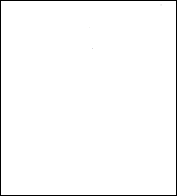 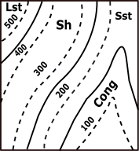 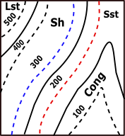 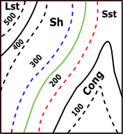Search for the first dotted line on both the sides of the solid line.
Let their index values be M and N ( M<N).
S be the number of solid lines between the obtained dotted lines.
T number of solid lines between the considered solid line and the line with index M.
Index =((N-M)/(S+1))*(T+1) + M
Choose P, Q, R such that their y coordinate is the index of the solid line and the x coordinate is zero.
Hint 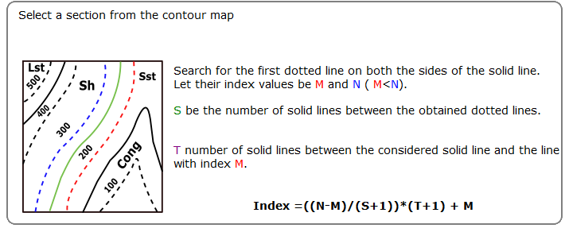 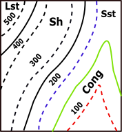Select P
Index =((N-M)/(S+1))*(T+1) + M
| Region | Soil Type |
|---|---|
| P(0,150) | Conglomerite |
| Q(0,250) | Sandstone |
| R(0,450) | Shales |
| Upper Region | Limestone |
Draw lines through P, Q, R parallel to X axis and below the curve. The drawn lines separate the type of soil.
➤P(0,150)☚
➤Q(0,250)☚
➤R(0,450)☚
➤Upper Region☚
Contour Map Get Paper
Get Paper
| Points | X-Co | Y-Co |
|---|---|---|
| a | 100 | 500 |
| b | 200 | 400 |
| c | 300 | 300 |
| d | 400 | 200 |
| e | 500 | 200 |
| f | 600 | 300 |
| g | 720 | 400 |
| h | 820 | 500 |
| i | 930 | 500 |
| j | 1020 | 400 |
| k | 1130 | 300 |
| l | 1240 | 300 |
| m | 1350 | 400 |
| n | 1450 | 500 |
 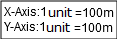
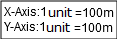


 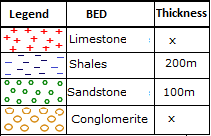
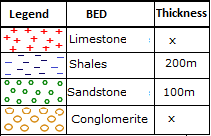
Both ends of the pipe must be trimmed to ensure parallel faces.